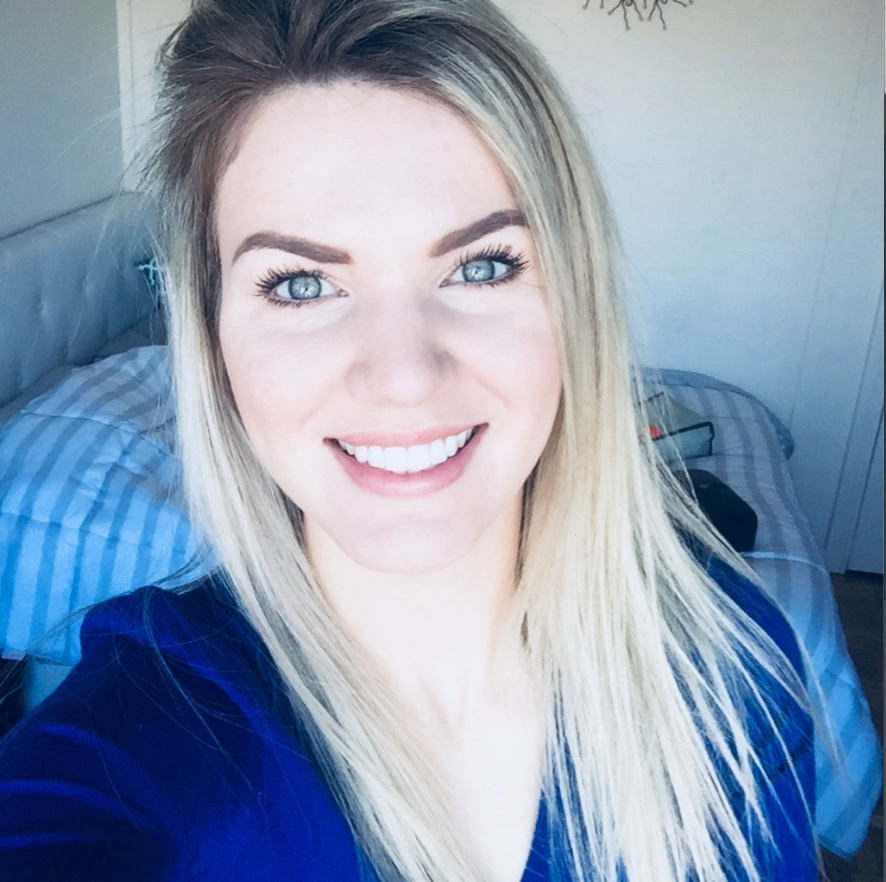
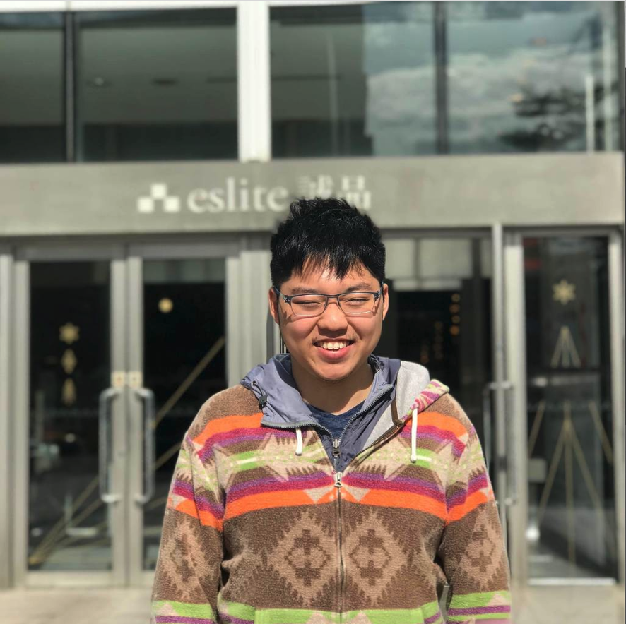
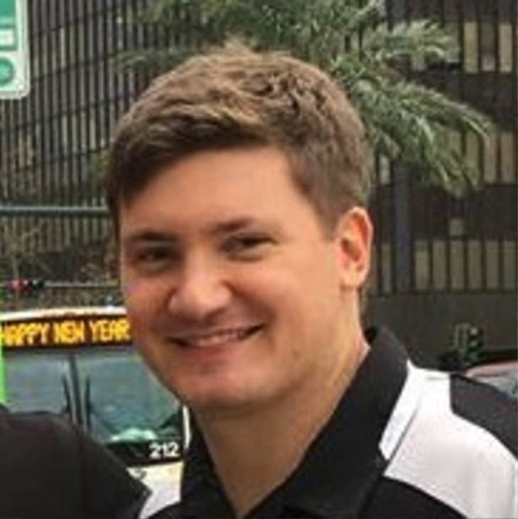
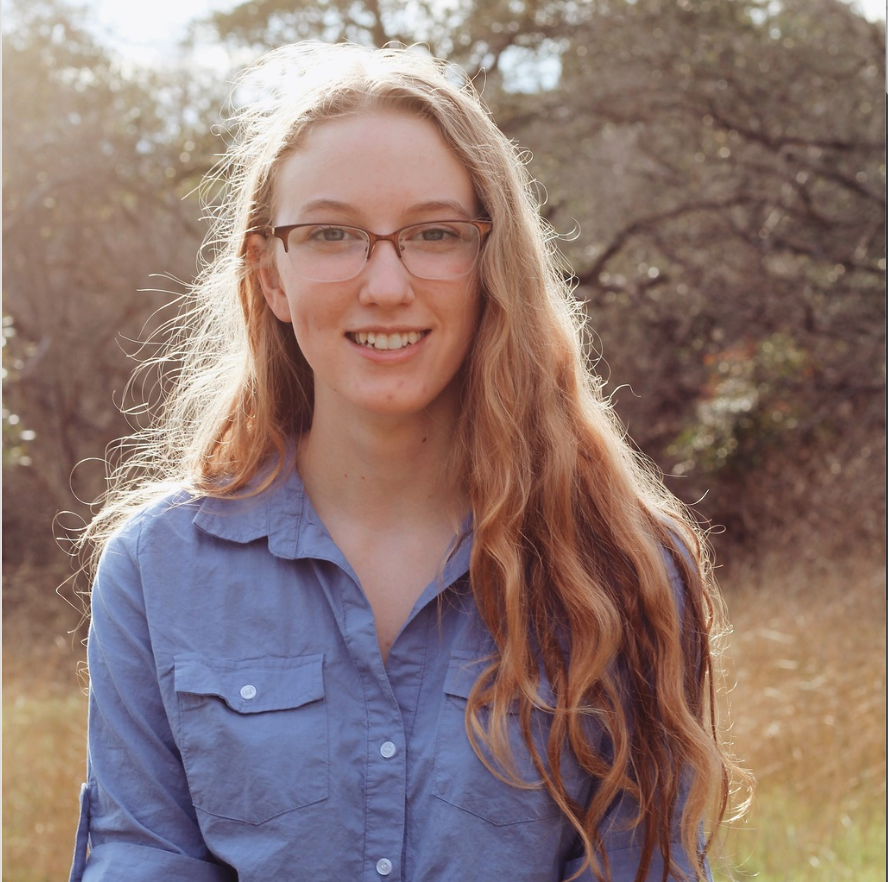
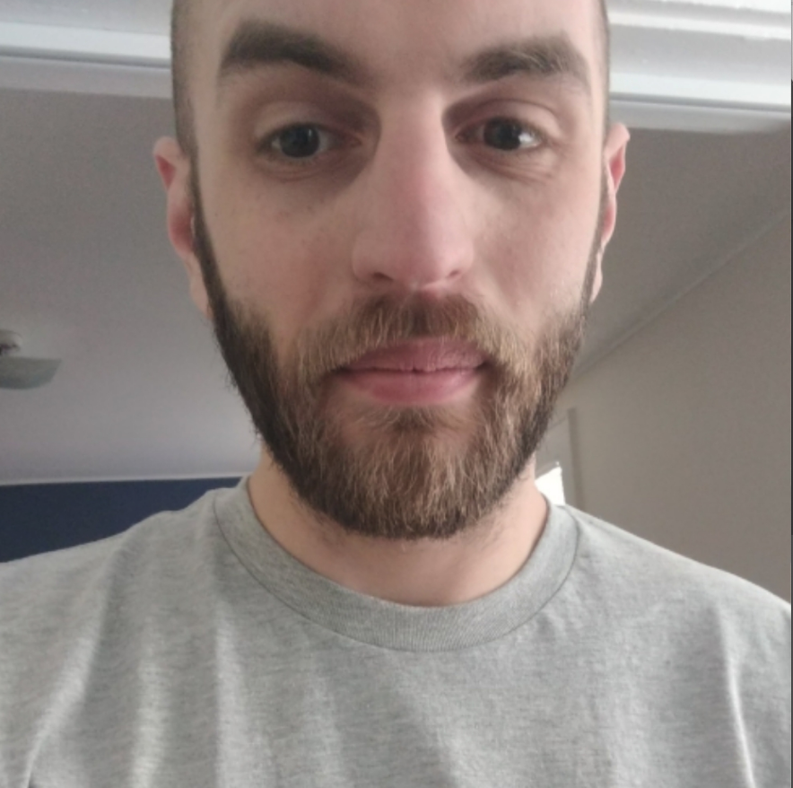
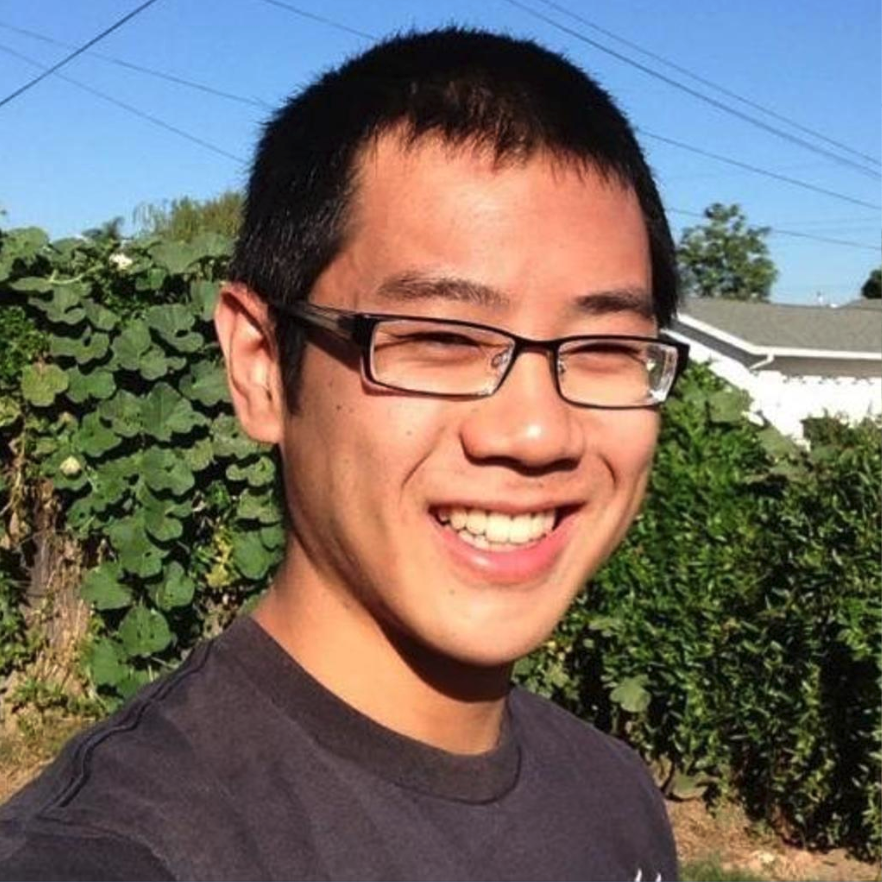

Will Cotton
Will is a data scientist student at Lambda School from Dallas, TX; he's also a Lambda DS Team Leader. His favorite book is When Breath Becomes Air by Paul Kalanithi.

Justine Gennaro
Justine is a fullstack developer and worked on the front end of the Better Reads app. Originally from France, Justine is based in Austin, Texas. Her favorite book is Our Second Life Begins When You Realize You Only Have One.

Marcus Kwan
Marcus worked on the front end as a React developer. He currently resides in Sydney, Australia and grew up in Hong Kong and Malaysia. His favorite book is Harry Potter and the Chamber of Secrets.
Seth Lewis
Seth is a web developer from Baltimore, MD. He always looking for new things to learn & implement, and enjoys practicing algorithm challenges in his free time. His favorite book is Neverwhere by Neil Gaiman.

Josh Mancuso
Josh is a data scientist from New Orleans, Louisiana. He's a fan of Catcher in the Rye, Fight Club, The Giver.
Matt Mastin
Matt is a data scientist. His favorite book this year was The Overstory by Richard Powers.

Sierra Obermoeller-Gilmer
Sierra worked on the front end with REACT on the Better Reads project. She's originally from Austin, TX and her favorite book is The Hitchhiker’s Guide to the Galaxy.
Nicholas Ramirez
Nick is a fullstack web development student at Lambda. He grew up in California but has spent most of his adult life on the east coast. He's read Brideshead Revisited at least three times.

Jarred Stanford
Jarred worked on the back end of the Better Reads app. He's a fullstack developer based in NYC and his favorite book is The Bell Jar.

Dustin Yang
Dustin worked on the data science behind Better Reads and is based in Los Angeles. His favorite book is Japanese Candlestick Charting Techniques by Steve Nilson.